选项显示
可通过多种不同的方式来进行采集数据的可视化。
点云
点云选项卡显示来自采集图像的 3D 点云模型。 可以使用鼠标旋转和移动点云视图。
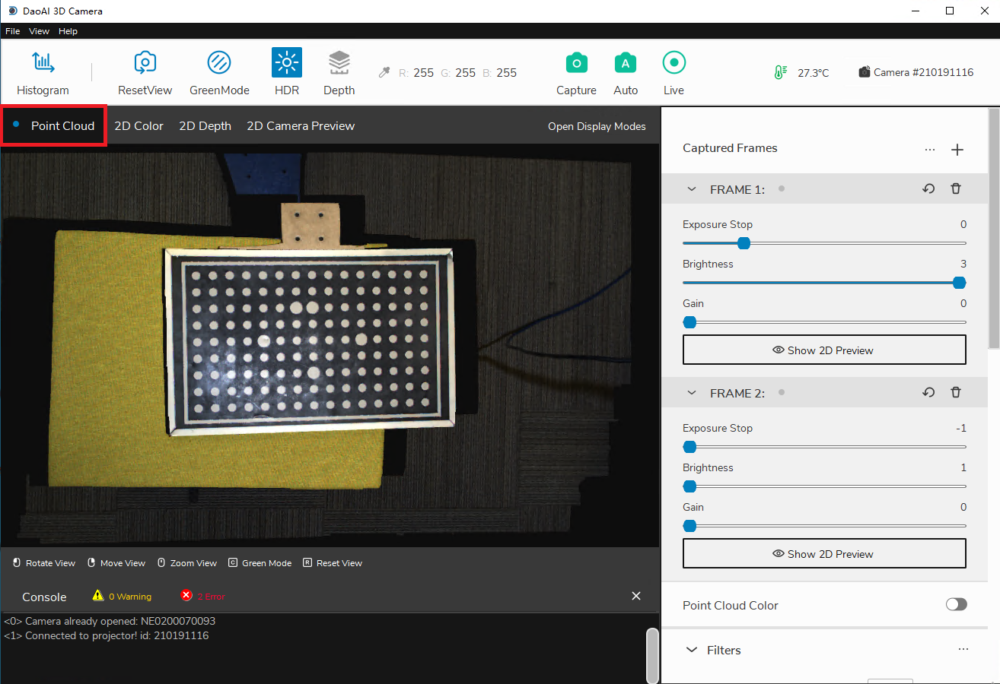鼠标左键旋转点云。
鼠标右键拖动点云。
鼠标滚轮放大和缩小点云。
键盘按钮“c”切换RGB点云和纯绿色点云。
键盘按钮“r”将相机视图恢复到原始状态。
点云也可以保存为 .daf、.ply 或 .pcd 文件。 这是在“文件”→“保存 3D 数据”下完成的。 将白板对象保存为ply格式可用于检测3D相机深度测量的准确性。 同样，可以通过“文件”→“加载 3D 数据”加载点云——加载后，点云将显示在此选项卡中。
点云的颜色可以在 5 种不同模式之间切换: 默认颜色、绿色模式、HDR、伪彩、和混合色(默认颜色加伪彩的融合)。 要更改模式，请单击点云选项卡中的显示模式下拉菜单并选择颜色类型。
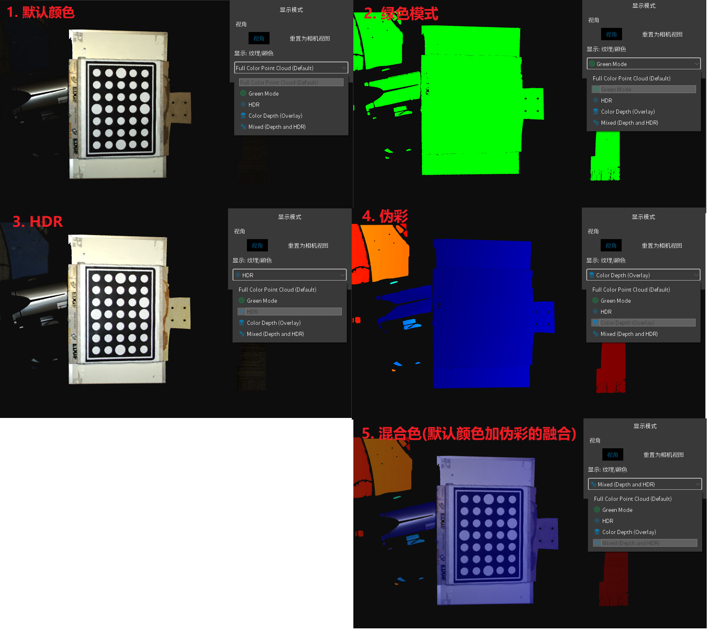2D 颜色
采集图像可在2D 颜色选项里进行显示，可以选择HDR模式。HDR将更改图像的颜色以最大化其动态范围。HDR在有多帧设定下采集动态范围时十分有用。 我们有多个帧的设置，以捕捉高动态范围图像。
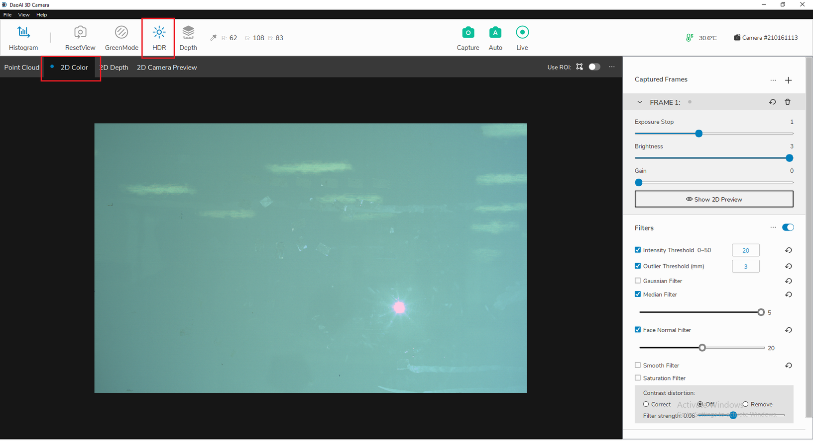2D 深度选项
2D 深度显示选项卡将每个有效像素的深度值编码为其颜色。 蓝色代表短距离, 红色代表远距离(以毫米为单位)。 如果要分析具体值, 您可以切换“深度”按钮, 将弹出深度图图例。
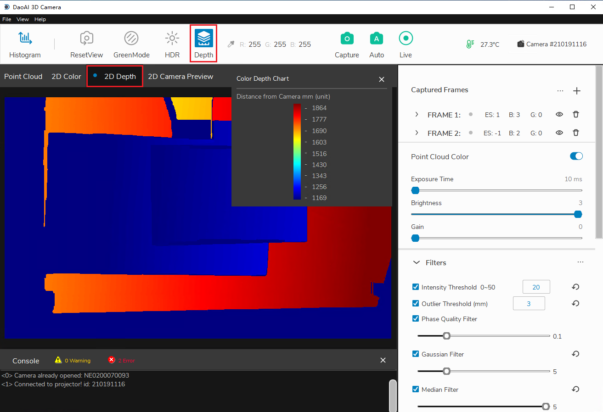您也可以将鼠标移到图片中以显示该点的深度值。
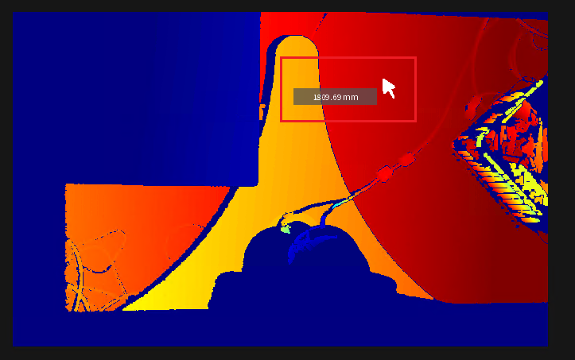2D 预览
2D相机预览是用来提前确认被摄物体的位置和图像的RGB值。 (例如，图片是一个双目摄像机视图的预览。 的预览，你可以将光标悬停在图片的不同位置，查看该区域的RGB值）。
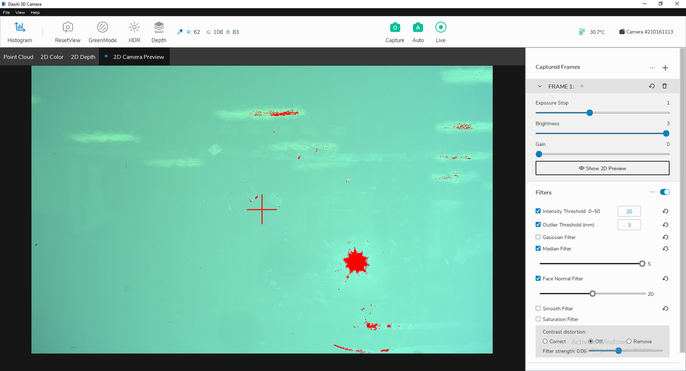二维预览功能是用来在进行拍摄前检索场景的预览图像的。
要进行二维预览，请点击您想预览的画面对应的下拉菜单中的 “显示二维预览”。预览将自动出现在 “二维摄像机预览 “中。 预览 “的可视标签中。如果图框设置是折叠的，您可以点击 “眼睛 “图标，以预览该图框。在 “二维相机预览 “选项卡中，如果图像有红点。 这意味着这些像素在当前帧设置下曝光过度。
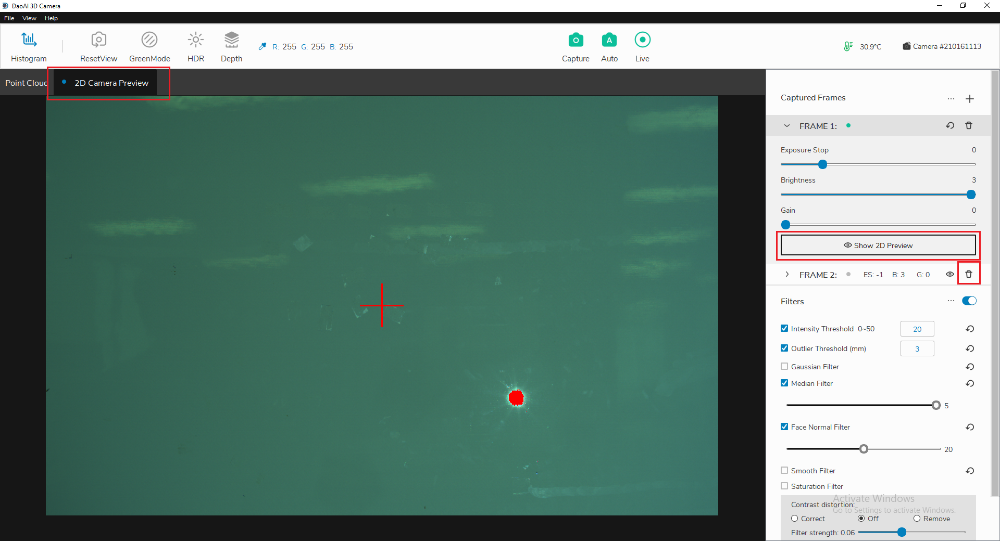如果存在2D相机预览，你可以点击主窗口顶部栏中的颜色选择器图标，以便在图像预览中找到光标位置的像素的RGB值。 在图像预览中光标位置的RGB值。这些值将被更新在顶栏上，并显示在左下角。
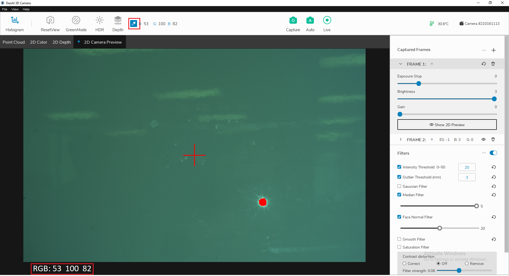感兴趣的区域
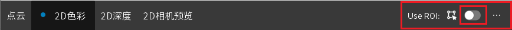感兴趣的区域可以在2D颜色选项中剪裁并显示出来。 您可以单击选项卡右上角的按钮并在图中框选出一个感兴趣的区域。
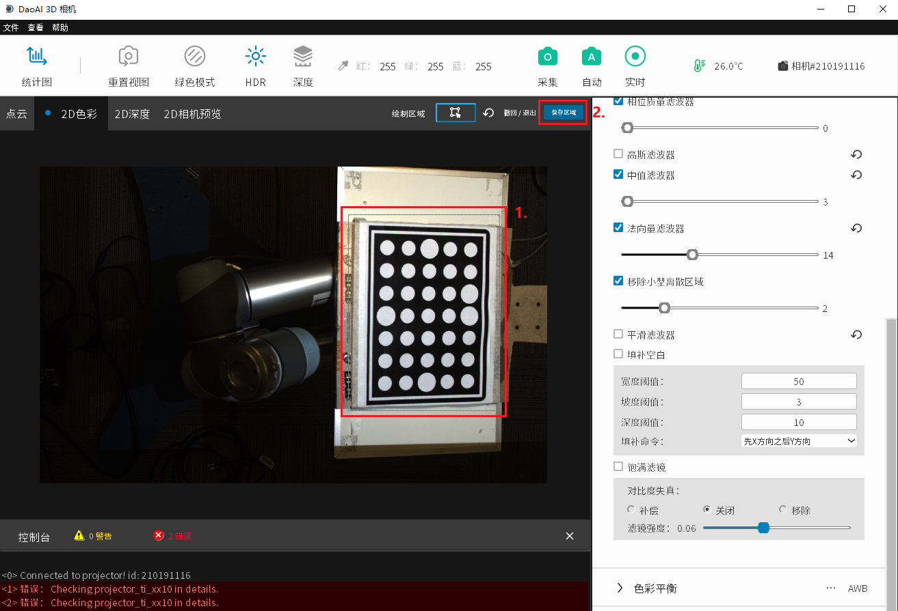当裁剪了显示区域后，您必须单击“保存区域”来保存它。 现在，只要打开 ROI, 所有未来的捕获都会记住这个保存的区域, 并且只会在“点云”和“2D 颜色”选项卡中显示该区域。
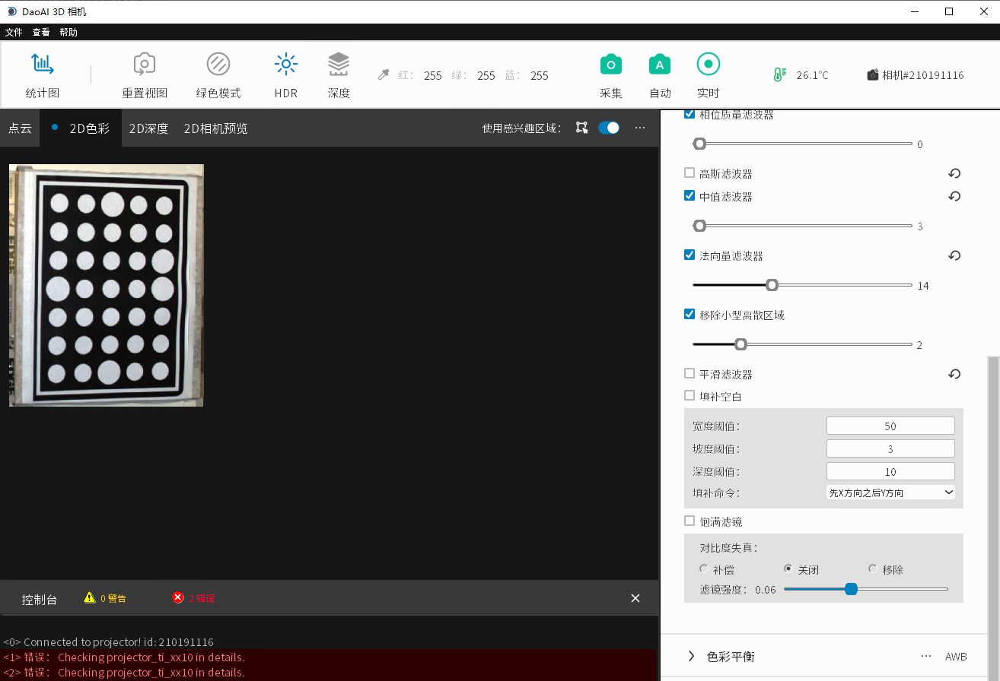当您决定不再需要此 ROI 时，您可以通过单击切换开关旁边的三个点并单击“删除 ROI”来清除保存的区域。
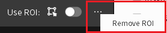